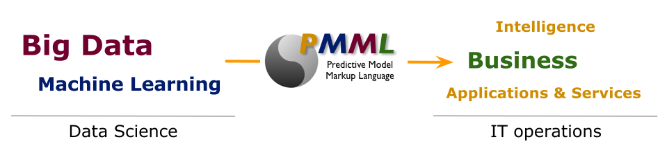

Change, which is the only constant in life, can be secured and facilitated by standardization. The leading standard for predictive analytics applications is the Predictive Model Markup Language (PMML).

PMML benefits:
Tools for data scientists:
Java libraries for application engineers:
Java libraries for PMML engineers:
Tools for DevOps engineers:
Java libraries for application engineers:
Tools for data analysts:
No PMML-related problem goes unsolved:
Openscoring.io blog: PMML Cookbook
Public announcements and discussions: JPMML mailing list
Our software is licensed under the terms of the GNU Affero General Public License (AGPL), version 3.0. AGPLv3 is a free software license [1]. AGPLv3 is very similar to the GNU General Public License (GPL), version 3, but comes with an additional provision, which addresses the use of software over a computer network.
Additionally, we are offering a Software Licensing Agreement (SLA), which permits the Licensee to use our software under the terms of the BSD 3-Clause License. You need to execute this SLA with us if you intend to develop proprietary software that is distributed publicly (either as a downloadable program and/or as a service accessible over a computer network).
Please contact info@openscoring.io for more information.
[1] "Free software" is a matter of liberty, not price. To understand the concept, you should think of "free" as in "free speech", not as in "free beer".